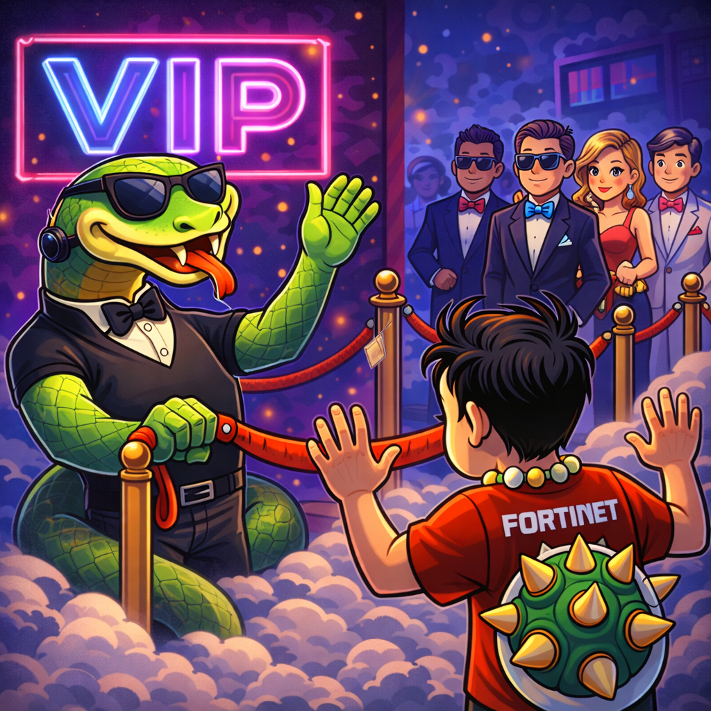
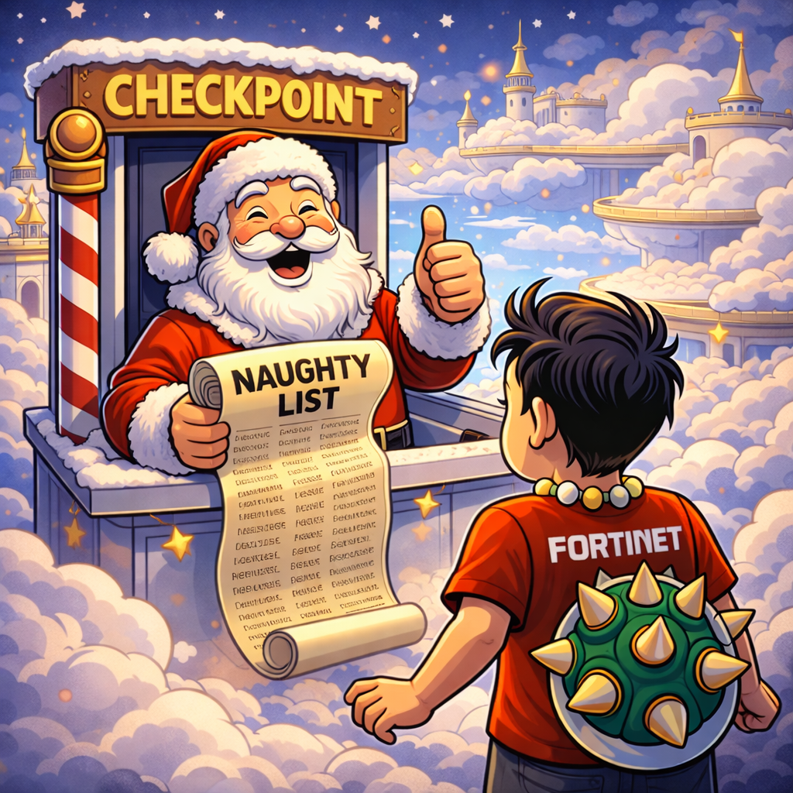

OVERVIEW
THE 13 STAGES — MEMORY PALACE
The full journey, gate by gate
The canonical HTTP GET evaluation order, gate by gate. Use the arrows to walk through each stage — or press ← → on your keyboard.
01
Firewall Module
🔥 Firewall
The very first gate. Evaluates Layer 3/4 rules, FQDNs, and network services.
Decides whether traffic is web (ports 80/443) or non-web. Non-web stops here;
web is handed to the Web Module.
I'm wearing a Fortinet shirt with a Bowser necklace, floating in the clouds.
I reach a huge wall on fire and see two doors — one covered
in spider webs, one without. Non-web traffic goes through the plain door and
straight to the internet. I go through the webby one.
02
Module handoff
🕸️ Web Module entry
Web traffic crosses from the firewall module into the web module. This is where
the proxy engines live — everything from here on is SSMA-powered.
I push through the spider-web-covered door and enter the
web module proper.
03
Decryption gate
🐍 SSL Inspection
Decrypts HTTPS traffic so every downstream engine can actually read and inspect
the content. Without SSL inspection, ATP, URL filtering, DLP, and sandbox are
all blind to ciphertext.
A snake SSLithers through and goes: "Open yo pockets boy,
keep those pockets out!" He's unzipping encrypted traffic so the rest of
the pipeline can see what's inside.
04
Admin override check
🎟️ Security Exceptions
The "escape hatch." Admins can explicitly mark traffic as exempt from further
security inspection. This is checked first so the bypass actually works —
if it ran later, traffic might already be blocked before the exception could apply.
Another snake at the VIP lane goes: "Nah mate, you're
not VIP, move over." I'm not on the exceptions list, so I have to go
through every remaining gate.

05
Global threat database
🎅 Malicious URLs
Zscaler's global threat intelligence database check. Known-bad URLs get blocked
outright. This is the broad "naughty list" — distinct from admin-defined custom
blocks (those are handled in URL Filtering later).
The snake tells me to go see if I'm on Santa's naughty list.
Santa goes "Hohoho, I don't see you on the naughty list!" and waves me through.

06
App-identity enforcement
☁️ Cloud App Control
Identifies the specific cloud application (Salesforce, Dropbox, personal Gmail
vs. corporate Gmail) and applies granular rules — allow, block, isolate, or
restrict specific actions like upload/post. More specific than URL Filtering,
which is why it runs first.
I ride Santa's sleigh up to the clouds where a big cloud forms a face
and says: "Let me check if the Fortinet application is alright… yes, it's fine!
Can I offer you a Cascade Pale Ale?" I say yes — dying for a beer.
07
Category-based filter
☁️ URL Filtering
Matches URLs against predefined or custom URL categories (Social Networking,
Gambling, Nerd, etc.) and applies allow/block rules. Runs after Cloud App Control
because category matching is less granular than app identification.
Big cloud introduces me to his little cloud brother:
"fortinet.net, nerd category, I guess that's fine you nerd."
08
Client/browser inspection
🐚 Browser Control
Inspects the client/browser fingerprint — version, plugins, extensions, outdated
components. Can block or caution based on risky browser configurations.
"Give me your necklace for scanning." The Bowser necklace
transforms like a Transformer and reveals a secret signature from
Mario himself. The cloud says "All good. Welcome to the ATP — Association of
Tennis Professionals!"

09
GeoIP restriction
🌏 Country-based restrictions
Blocks or allows based on source/destination country via GeoIP lookup. Cheap
and fast check — runs before heavier signature-based inspection.
I get to the court and a reporter asks if I'm Russian. I joke:
"Haha yeah, I am RUSHIN to the court!" They handcuff me momentarily —
"Bruv, it's a pun m8!"

10
Deep packet signature scan
✍️ IPS Signatures
Intrusion Prevention System matches traffic against signatures for known
exploits, C2 patterns, and attack payloads. Expensive per-packet pattern matching —
that's why it runs after cheaper filters like country blocking.
At the Australian Open, heaps of tennis fans want my
signature (IPS!). I'm signing books, shirts, everything.

11
Page Risk Index scoring
📄 Suspicious Content Protection
Uses the Page Risk Index to score pages on behavioural and structural risk signals
(obfuscated scripts, risky embeds, etc.). Blocks or cautions if the page exceeds
the configured risk threshold.
Someone hands me a book to sign — blank pages mostly, but one page is a
bright red glowing book with the word "RISK" shimmering
in light text. I'm like "Nah, that page is risky."

12
Peer-to-peer throttle/block
👮 P2P Control
Detects and controls peer-to-peer traffic patterns (BitTorrent, etc.). Blocks or
throttles before allocating scarce bandwidth to potentially unwanted traffic.
Security guards control the crowd around me — it's
P2P here (peer-to-peer = person-to-person = crowd control).
Think Veigar's E skill: a cage locking the crowd in place.

13
Traffic shaping (final stage)
🔋 Bandwidth Control
Allocates and shapes bandwidth for traffic that has passed every previous check.
Runs last because there's no point reserving bandwidth for traffic that might
get blocked by any earlier engine.
I'm so tired from traveling up to the clouds, being checked by Santa, chatting
with clouds, signing autographs… my bandwidth has been taken up all day.

01 / 13
FIREWALL MODULE
ORDERING PRINCIPLES
Why this order? Three guiding rules
The order isn't arbitrary. Three principles govern almost every placement decision in ZIA's pipeline. If you understand these, you can reason your way to the right answer even if you can't remember the exact sequence.
| Principle | Meaning | Example in the pipeline |
|---|---|---|
| Escape hatches first | Explicit admin overrides must fire before anything that could block them. | Security Exceptions runs before Malicious URL check. |
| Cheap before expensive | Fast lookups (GeoIP, category match) before heavy deep inspection. | Country blocking runs before IPS signature matching. |
| Specific before general | Granular identification (app) before broad categorization (URL category). | Cloud App Control runs before URL Filtering. |
| Resource allocation last | Only allocate bandwidth to traffic that's been cleared by every security engine. | Bandwidth Control is the final stage. |
ANALOGY — SPECIALIST BEFORE GP
Cloud App Control is the specialist doctor — it knows the exact
application. URL Filtering is the GP — it only knows the general
category. You see the specialist first because they have the more precise diagnosis.
The GP only weighs in if the specialist didn't make a call.
ANALOGY — DIPLOMATIC PASSPORT
Security Exceptions is a diplomatic passport. If customs scans it
first, you're waved through. But if they dig through your bags before checking the
passport, the whole concept of diplomatic immunity is broken. Escape hatches only
work when they're the first thing checked.
ANALOGY — SEAT ASSIGNMENT LAST
Bandwidth Control is the concierge assigning your seat on the plane.
You don't get a seat until you've cleared passport control, customs, and security.
Same logic: no point reserving bandwidth for traffic that might get killed earlier.
EXAM TIPS
What the ZDTE exam tests
EXAM TIP
Expect a scenario like: "Firewall allows Box.net but web Cloud App Control blocks
it. What happens?" → Blocked. The restrictive module wins, and
the web module runs after the firewall module for web traffic.
EXAM TIP
If a question asks which logs to check when a URL block happens, remember: the
Firewall Insights logs show the traffic as allowed (it
passed the firewall), but the Web Insights logs show it as
blocked. Different modules, different log stores.
EXAM TIP
The Leading Practices Guide lists a shorter 9-stage order (Firewall → SSL → ATP →
AV → Cloud App → URL → File Type → DLP → Sandbox). The full ZDTE study guide lists
13 policy-level stages. Both are correct — one describes engines,
the other describes policy evaluation order. The 13-stage view is
more granular and more likely to appear in detailed scenario questions.
- Know the two-module model (Firewall Module vs. Web Module) cold.
- Remember non-web traffic (SSH, RDP, DNS) never enters the web module.
- SSL Inspection is the prerequisite for most downstream engines — no decryption means no deep inspection.
- Security Exceptions is always first so admin overrides actually override.
- Bandwidth Control is always last — resource allocation happens after all security decisions.
- Cloud App Control is more specific than URL Filtering, so it runs first.
- Cheap filters (country, category) before expensive ones (IPS, sandbox).